MfG
CMT – 2025
Campus Munich Typeface
Designed with Sophia Rhein
Design of a custom typeface and pictogram system for the Campus Munich project. Starting from the curved “M” of the logo, the typeface translates its dynamic character into three distinct styles: dot matrix, geometric, and pixel-based. All variations follow the same underlying grid, allowing them to be freely combined while reflecting the diversity of the campus. The pictograms extend this visual language into a flexible and expressive communication system.
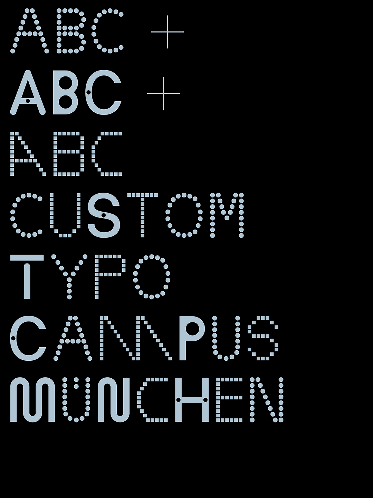
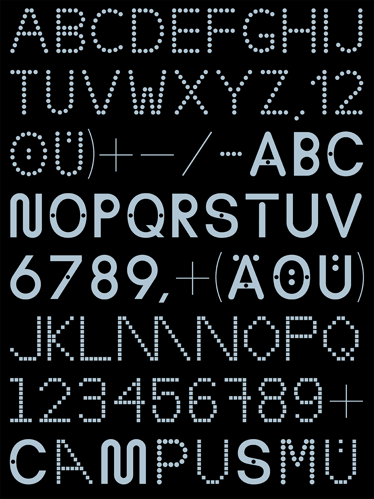
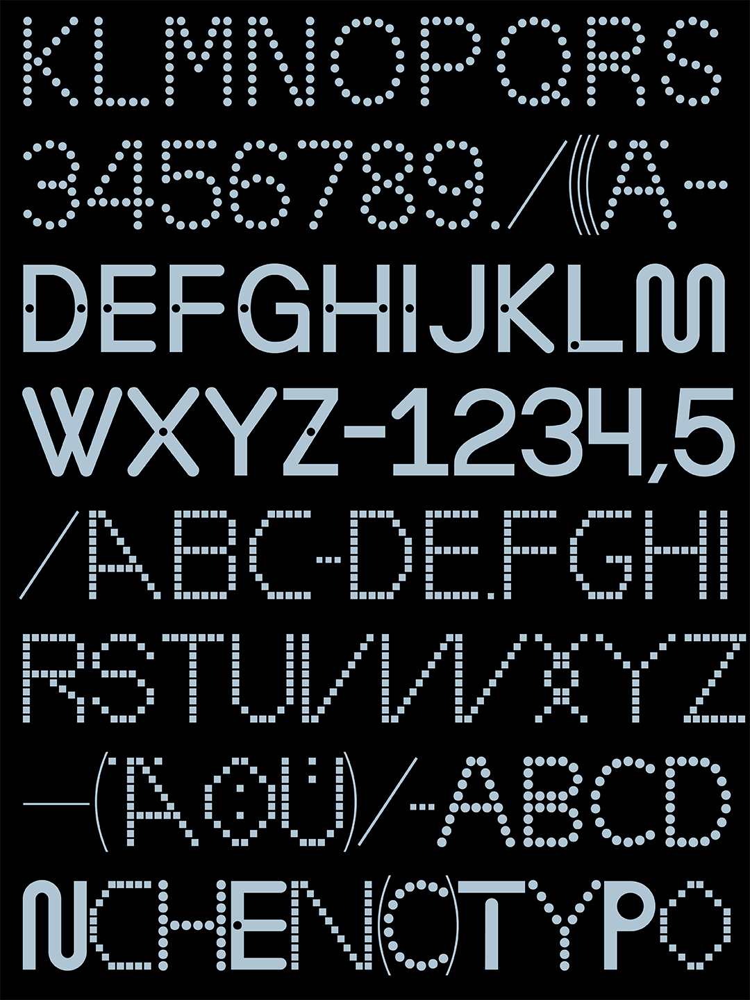
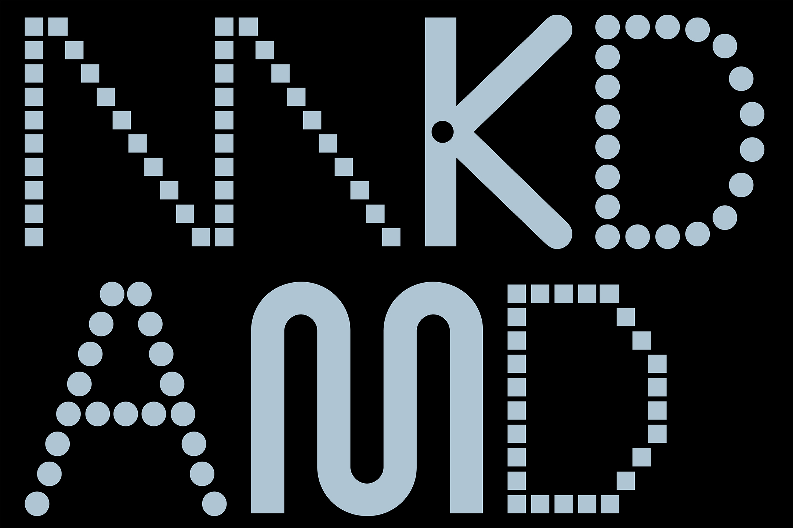
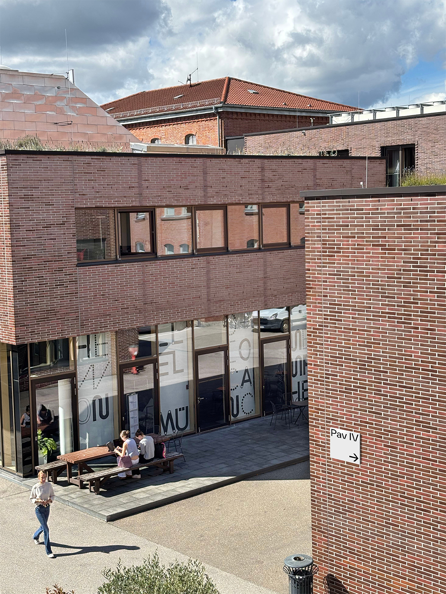
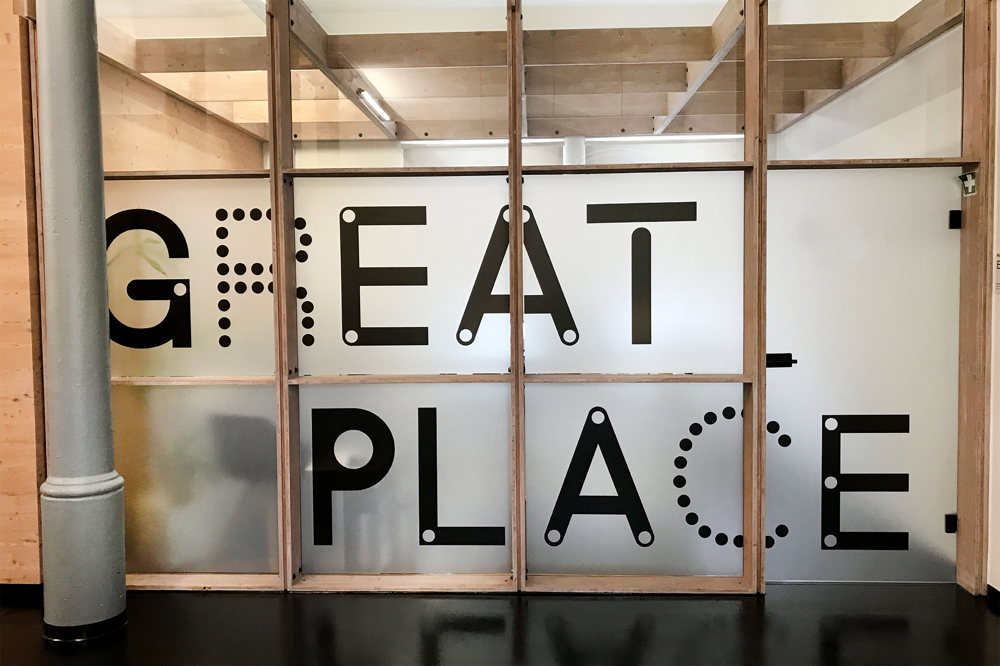
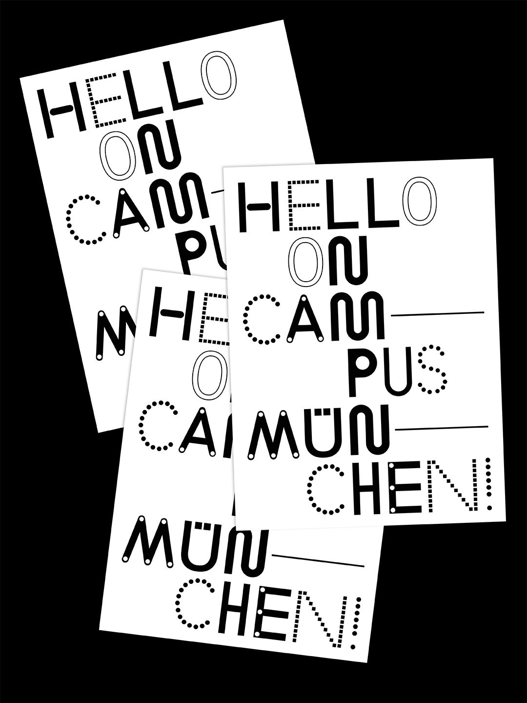
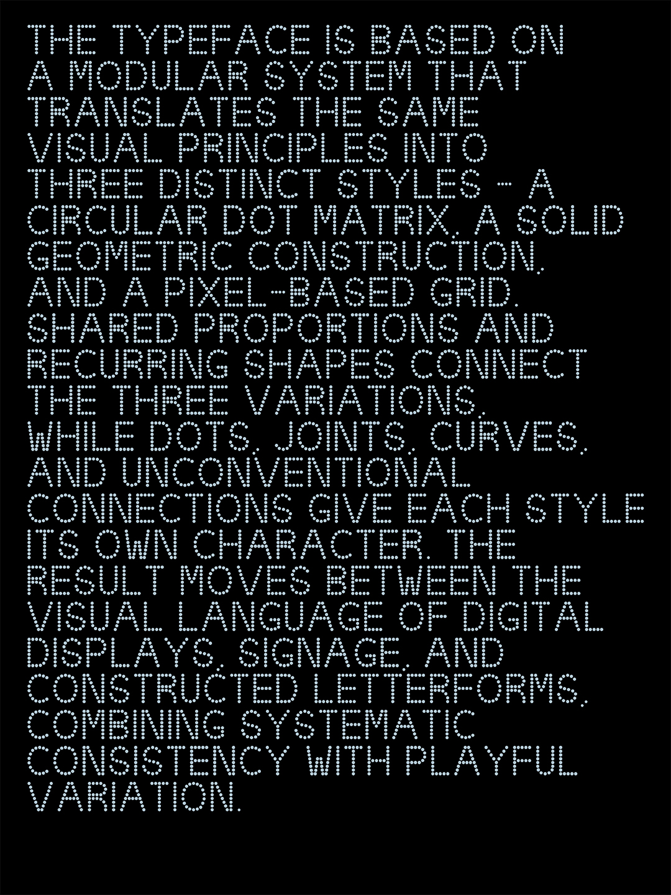
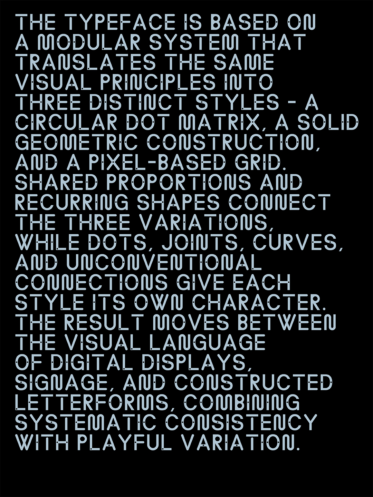
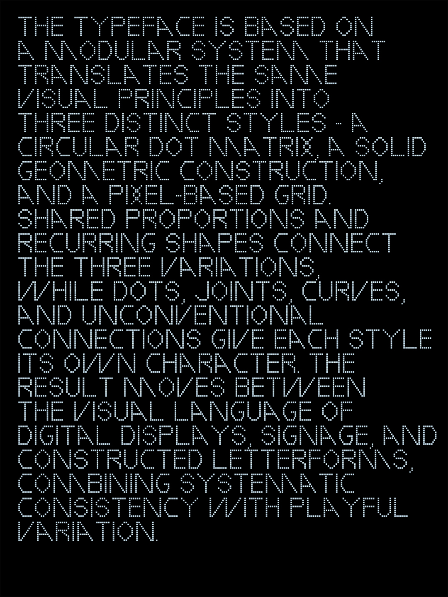
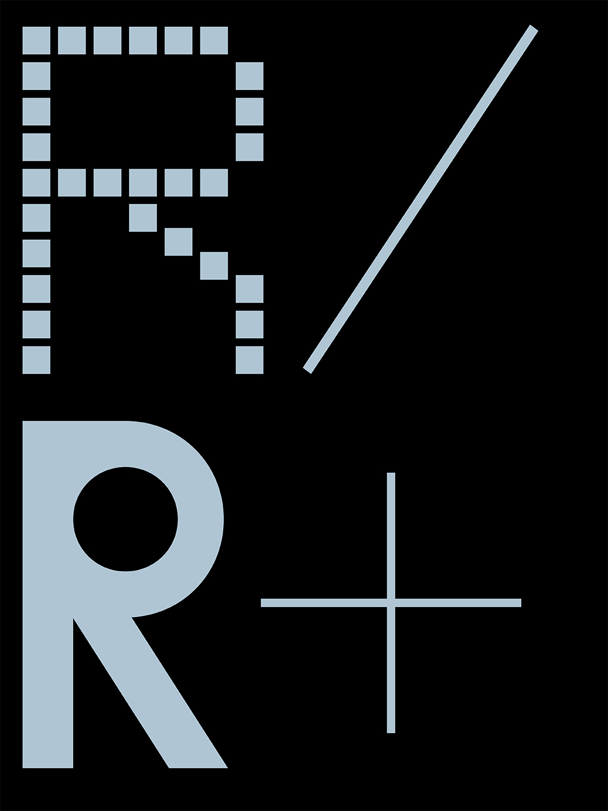
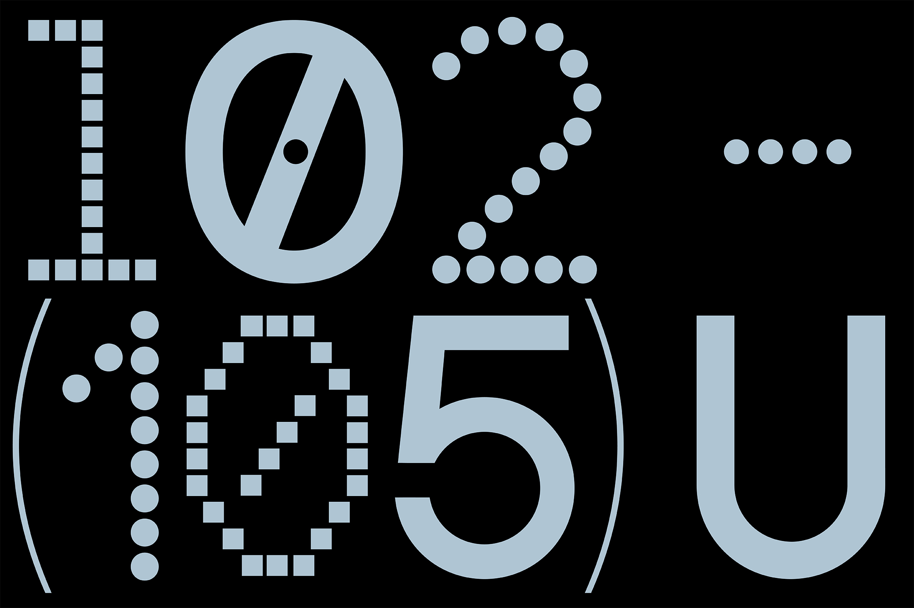